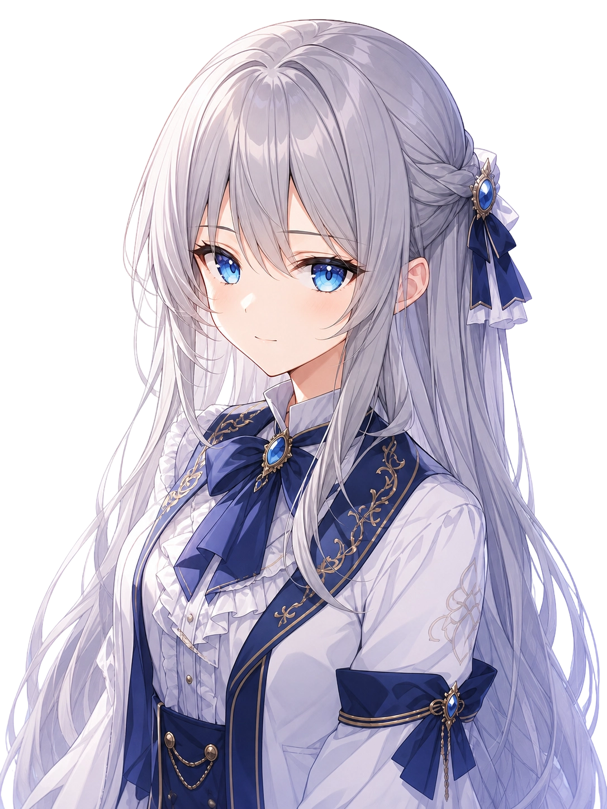
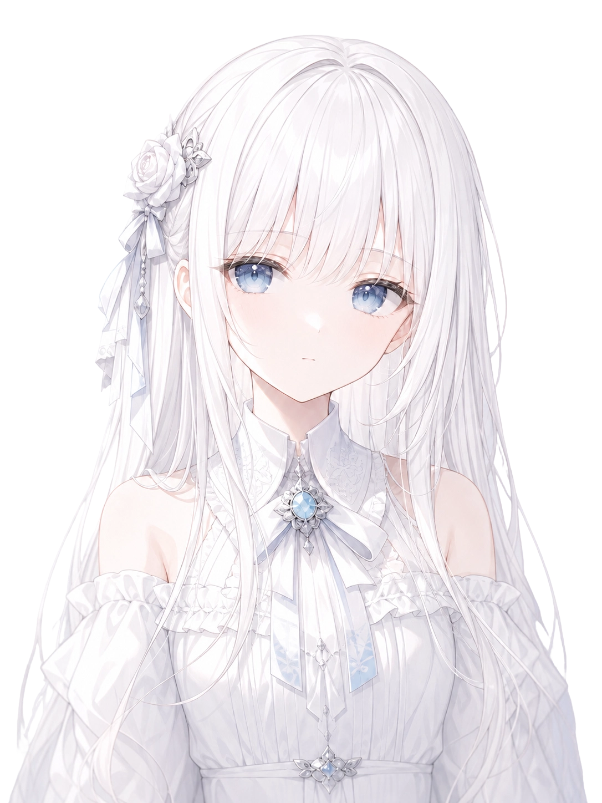

方案 A · 雪瓷棱镜气泡式对话
立绘基准线检测：
Δy = 0.0px
锁定
top -- / bot --
展示参考虚线
重播对话
打开对话
庭院玫瑰园
公爵府 · 仲夏午后

点击交谈 · 希尔维亚

点击交谈 · 爱丽丝
点击场景中的
希尔维亚
或
爱丽丝
触发雪瓷棱镜气泡对话 · 观察立绘基线纹丝不动
地图
交谈
体1
修行
体3
学习
体2
课程
体2+
休息
恢复
物品
奇遇
下个季度
立绘顶基准线 top: --px · Δy = 0.0px
立绘底基准线 bottom: --px · Δy = 0.0px